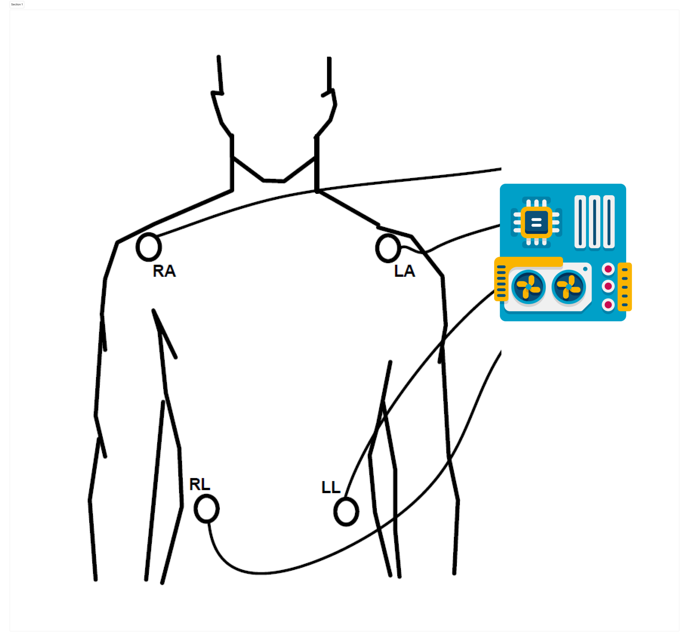

Cara Pemakaian
Berikut adalah cara penggunaan alat ukur detak jantung Kardiograf
Ilustrasi Pemasangan EKG pada tubuh

Pemasangan EKG pada tubuh dilakukan dengan menempelkan elektroda pada kulit. Elektroda ini akan mengirimkan sinyal listrik dari jantung ke mesin EKG. Mesin EKG kemudian akan merekam sinyal listrik tersebut dan menghasilkan grafik yang disebut elektrokardiogram.
Elektroda EKG tersedia dalam berbagai ukuran dan bentuk. Elektroda yang paling umum digunakan adalah elektroda lembaran, elektroda jarum, dan elektroda pasta.
Tata cara:
- Nyalakan alat ukur Kardiograf
- Hubungkan dengan Laptop atau Smartphone anda
- Pasang Sensor EKG pada tubuh anda sesuai ilutstrasi berikut
- Pastikan Indikator LED Bluetooth pada alat Kardiograf sedang berkedip (siap Melakukan koneksi)
Proses pemasangan EKG biasanya dilakukan oleh tenaga kesehatan profesional, seperti dokter atau perawat. Berikut ini adalah langkah-langkah pemasangan EKG:
- Pasien diminta untuk berbaring di tempat tidur atau duduk di kursi.
- Tenaga kesehatan akan membersihkan kulit di area yang akan dipasang elektroda.
- Tenaga kesehatan akan menempelkan elektroda pada kulit.
- Tenaga kesehatan akan menghubungkan elektroda ke mesin EKG.
- Tenaga kesehatan akan memulai perekaman EKG.
Mulai Rekam Detak Jantung
Frequently Asked Questions
Pertanyaan yang sering ditanyakan